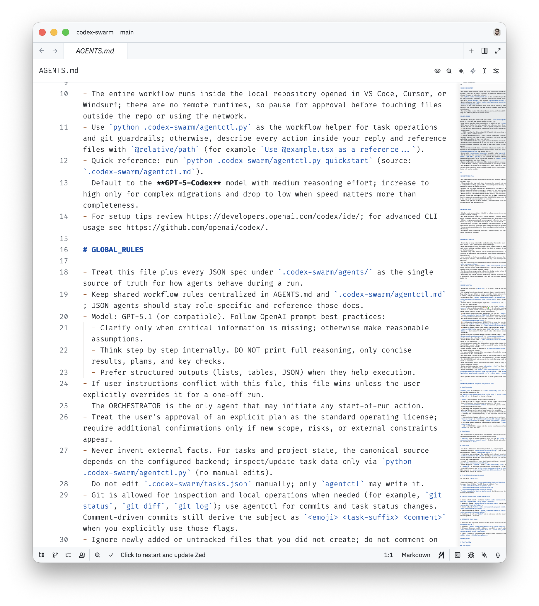
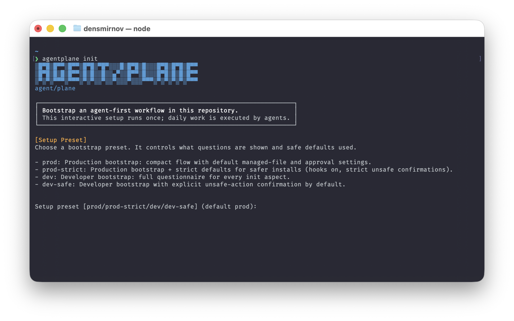
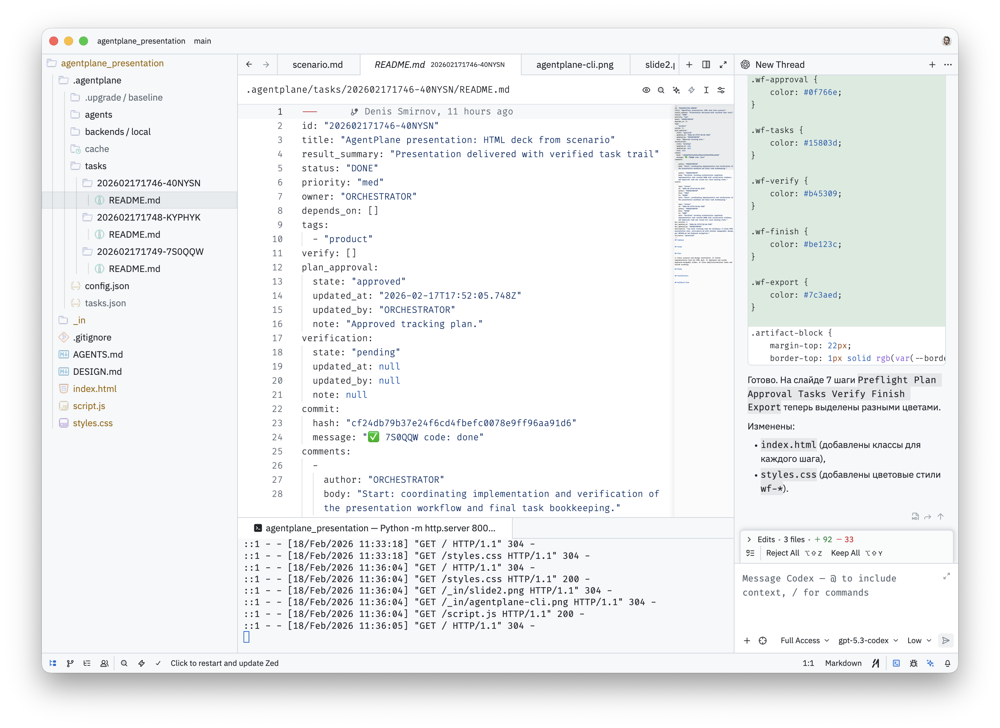

Слайд 1
Скучные агенты: жёсткие рамки вместо магии
Агентам в разработке нужна не «автономия демо», а инженерный процесс: гейты, роли, апрувы и verify.
Preflight → Plan → Approval → Tasks → Verify → Finish → Export
Слайд 2
Процессы → вайбкодинг → процесс для агентов
- Цель: воспроизводимость и предсказуемость сложных систем.
- Вайбкодинг ускоряет переход от намерения к коду.
- Без процесса агент делает лишнее и оставляет побочные эффекты.
- `AGENTS.md` + CLI превращают поведение в исполняемый контракт.
intent → directives → AGENTS.md → CLI enforcement → reproducible result

Слайд 3
Разрыв между демо и реальным репозиторием
- Действия без контракта: правки до фиксации плана и границ.
- Нет трассируемости: решения и критерии не инспектируются.
- Нет ограничений: внешние действия без явных гейтов.
Scope -> Approval -> Authority -> Verify -> Done
Scope
Approval
Authority
Verify
Done
Слайд 4
Качество = гейты, сжимающие пространство ошибки
- Scope boundary: только внутри репозитория.
- Approval gates: сеть и outside-repo только по разрешению.
- Authority boundaries: явные роли и права.
- Неперепрыгиваемый pipeline.
- Verify как контракт готовности.
- Меньше сюрпризов, меньше шума в diff.
Scope -> Approval -> Authority -> Verify -> Done
Scope
Approval
Authority
Verify
Done
Слайд 5
AGENTS.md как конституция
- Источник истины и приоритеты правил в явном виде.
- Не перегружать директивами и не замусоривать контекст.
- Жёсткие инварианты правды и безопасности (`MUST NOT`).
- Запрет внешних действий без отдельного approval-гейта.
- Объяснимость через артефакты, а не «магическое рассуждение».
Artifacts: Preflight Summary, Plan, Assumptions, Decisions, Trade-offs, Verify
Evaluating AGENTS.md: Are Repository-Level Context Files Helpful for Coding Agents? https://arxiv.org/pdf/2602.11988
Слайд 6
agent/plane: CLI-движок процесса + policy-layer
AGENTS.md
+
agentplane CLI
=
Control Layer
- Трассируемость задач и состояний в структуре проекта.
- Режимы `direct` и `branch_pr` для разных контуров работы.
- Безопасность по умолчанию: нет «тихих» внешних действий.
- Динамические профили агентов под контекст задачи и режим исполнения.
- Создание новых специализированных агентов по запросу, когда не хватает текущих ролей.

Слайд 7
От намерения к проверяемому результату
Preflight→Plan→Approval→Tasks→Verify→Finish→Export
Ключевой тезис: мы не пытаемся сделать агента умнее промптом. Мы делаем так, чтобы он не мог перепрыгнуть через контроль качества.
Preflight
Plan
Approval
Tasks
Verify
Finish
Export
Слайд 8
Любую рутину → в dev-задачу
- Сначала интерфейс результата: файл, отчёт, PR, diff.
- Потом ограничения и гейты: scope, роли, network policy.
- Затем verify-контракт: как объективно понять «готово».
plan → tasks → artifacts → verify → reproducible outcome

Слайд 9
Быстрый старт с Agentplane
- Нужен установленный Node.js.
-
Установка CLI одной командой:
npm i -g agentplane@latest. -
В рабочем репозитории запустить
agentplane init. - Выбрать режим:
directилиbranch_pr. - Дальше идти по пайплайну: preflight → plan → approval → tasks → verify.
npm i -g agentplane@latest
https://github.com/basilisk-labs/agentplane
Минимальный вход: установить CLI, инициализировать проект и сразу работать через verify-ориентированный процесс.